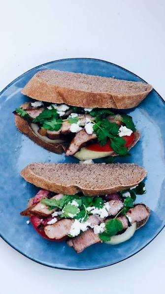

Home
Pork Chop Sandwich

Description
Macao's famous pork chop sandwich, which Bourdain described as possibly the most delicious thing in his cookbook.
Ingredients
- 4 cloves garlic, chopped
- 2 teaspoons five-spice powder
- 1 tablespoon dark brown sugar
- 1 tablespoon sesame oil
- 1/4 cup soy sauce
- 1/4 cup Chinese black vinegar
- 1/4 cup Shaoxing (Chinese rice wine)
- 4 (6 ounce) bone-in pork rib chops
- 1 teaspoon salt, or to taste
- vegetable oil for frying, as needed
- 8 thick slices milk bread, or any white sandwich bread
- 1/2 cup all-purpose flour
- 2 large eggs
- 2 1/2 cups panko bread crumbs
Steps
- For marinade, combine garlic, five-spice powder, brown sugar, sesame oil, soy sauce, black vinegar, and rice wine in a bowl and whisk to combine. Set aside until needed.
- Trim any excess fat from the pork chops. Use a sharp knife to make about five cuts, equally spaced, around the outside of the pork chop, about one inch into the meat, so that the meat stays flat when you fry it. Use a meat pounder or heavy pan to flatten the pork chop to about 1/4-inch thick. Check for any sharp bone fragments and remove them if needed.
- Place a large resealable plastic bag in a bowl, transfer pork chops into the bag, and pour in the marinade. Seal the bag, and then massage the pork chops through the plastic to coat each one evenly in marinade. Refrigerate for 1 to 12 hours, with 8 to 10 hours being the ideal marination time.
- For sambal butter, combine softened butter with sambal chili sauce, and use a spoon or whisk to mix smoothly. Butter needs to be soft for this to happen easily. Set aside until needed.
- When ready to cook, remove chops from marinade, brush off any sliced garlic, and pat completely dry with paper towels. Sprinkle both sides lightly with salt.
- For the original Macau-style pan-fried version, heat about a quarter inch of vegetable oil in a heavy-duty pan over medium-high heat. When the oil reaches 350 degrees F (180 degrees C), or starts to shimmer, place the dry pork chops in, reduce heat to medium, and cook until desired doneness is reached, 3 to 4 minutes per side. Remove to a plate; set aside to rest.
- Remove chops from marinade and pat dry, trim off the bone, and lightly salt both sides as in Step 5. Dust both sides of pork chops generously with flour. Dip each one into beaten egg. Spread panko on a plate, add chop, and press bread crumbs very firmly into the meat on both sides. Shake off excess bread crumbs; transfer to a clean plate or pan; repeat with remaining chops. If possible, refrigerate chops for 15 to 20 minutes before frying. Prepare frying pan as in Step 6; place breaded pork chops in, reduce heat to medium, and cook until golden brown and no longer pink at the center, about 3 minutes per side. Remove to a paper towel-lined plate; set aside to rest.
- Meanwhile, toast the bread. Add chop on one slice, and dress with sambal butter (or sambal only, for the breaded chop) and cilantro leaves if desired. Add top bread slice, and cut sandwiches in half parallel to the bone before serving.
- Serve and enjoy!